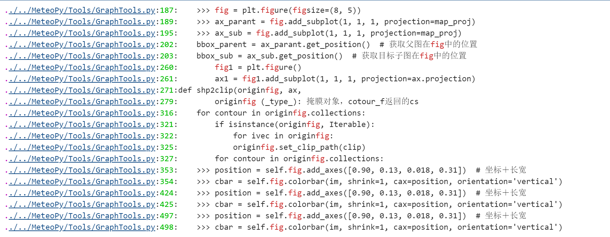

测试Tools文件夹下的FileTools.py
1. 测试get_all_file函数
获取文件夹最内层的数据文件，主要用于多层文件嵌套时
from MeteoPy import get_all_file
get_all_file('../../', 'ipynb')
output:
['../..//Test/DataProTest/PreProTest.ipynb',
'../..//Test/MeteoDrawTest/DrawTest.ipynb',
'../..//Test/ToolsTest/FileToolsTest.ipynb',
'../..//Test/ToolsTest/GraphToolsTest.ipynb']
2. 测试search_str函数
搜索文件夹下所有文件，查找指定内容
from MeteoPy import search_str
search_str('../../MeteoPy/Tools/GraphTools.py', 'Fig', False, '.py', 'unconsole')
